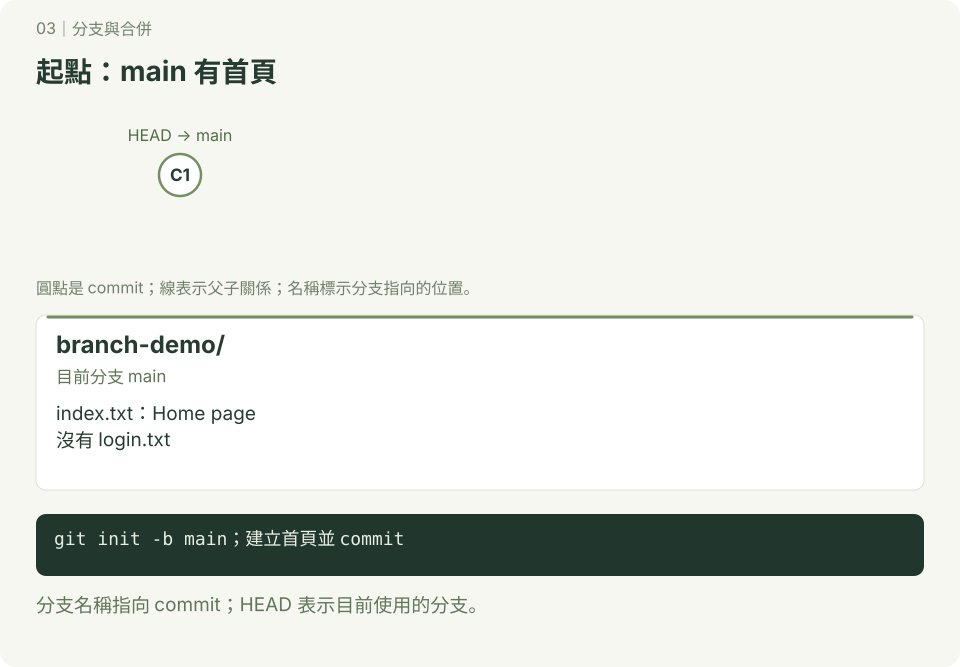
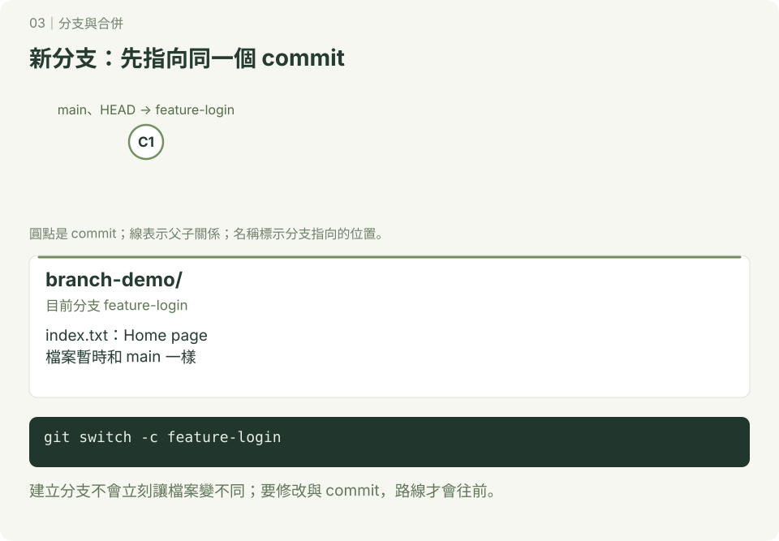
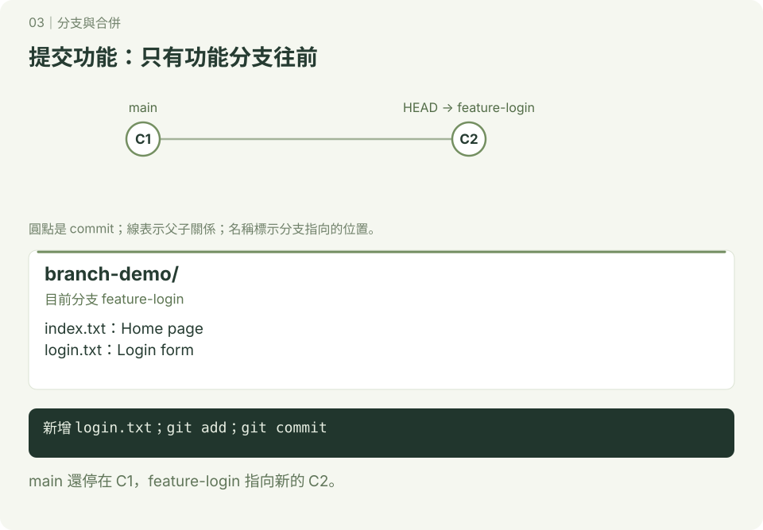
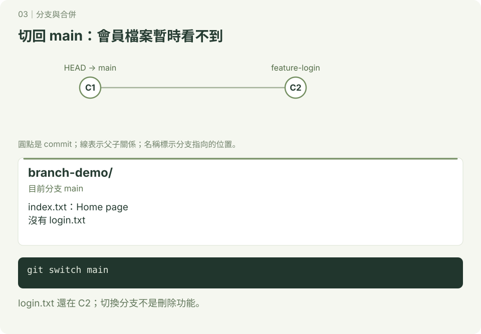
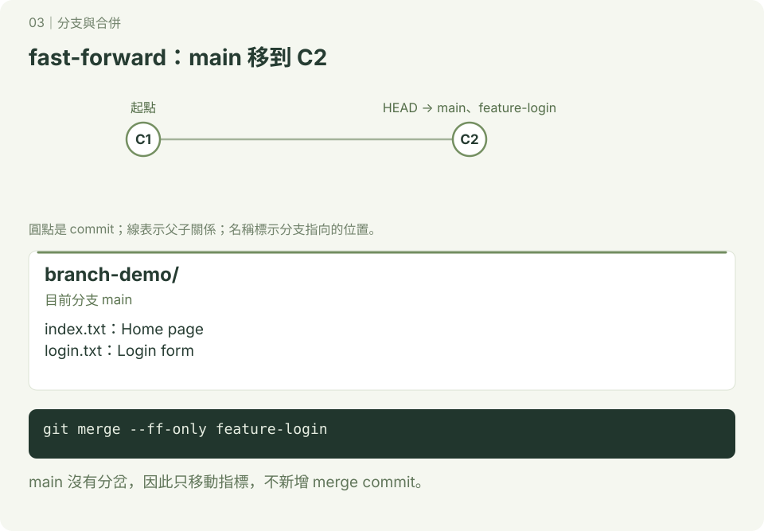
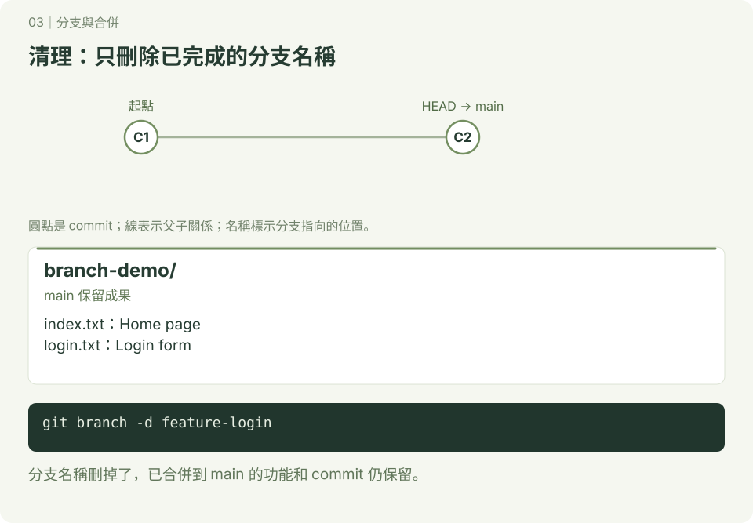

分支與合併
本章附 SVG 圖解；可先讀 互動版使用說明，再用瀏覽器開啟 docs/index.html#branch/1，按下一步觀察變化。GitHub 的 README 顯示靜態圖，下載教材後即可離線操作互動版。
你想新增會員功能，但又想保留目前可以使用的版本。分支可以記錄不同的開發路線；完成後，再把成果合併回主要分支。
先學會 git add、git commit、git status。本章統一使用 main；舊專案若叫 master，它也能作為主要分支，名稱不同不代表功能不同。
1. 先認識三個名稱
| 名稱 | 意思 |
|---|---|
| commit | 一次已記錄的檔案版本 |
| branch（分支） | 指向某個 commit 的名稱，提交後會往新的 commit 移動 |
| HEAD | 目前所在的位置；一般操作時指向目前分支 |
建立分支時，兩個分支可以先指向同一個 commit。切換分支後新增 commit，這條分支才開始走自己的路。
git switch 在同一個資料夾切換分支；受追蹤的檔案會依目標版本更新。尚未提交的修改可能跟著切換，也可能阻止切換，因此本練習先提交再切換。
2. 照做：新增會員功能
使用 macOS／Linux 終端機或 Windows Git Bash。已設定 Git 姓名與電子郵件，在你選的練習位置操作；branch-demo 必須是尚未使用的資料夾名稱。bash 區塊是指令，text 區塊是預期結果。
步驟一：建立起點

操作位置：你選的練習位置。
mkdir branch-demo
cd branch-demo
git init -b main
printf 'Home page\n' > index.txt
git add index.txt
git commit -m "建立首頁"預期：主要分支叫 main，裡面有 index.txt。
步驟二：建立並切換分支

操作位置：branch-demo。
git switch -c feature-login
git branch預期：
* feature-login
main星號表示目前分支。switch -c 同時建立與切換；單獨使用 git branch feature-login 只會建立，不會切換。
步驟三：提交新功能

操作位置：branch-demo 的 feature-login 分支。
printf 'Login form\n' > login.txt
git add login.txt
git commit -m "新增會員登入頁"
ls預期：有 index.txt 與 login.txt。
先猜一猜：切換回 main 後，login.txt 還看得到嗎？
步驟四：回到主要版本

git switch main
ls預期：只剩 index.txt。login.txt 已保存在 feature-login 的 commit 中，沒有遺失。
步驟五：合併與確認

操作位置：branch-demo 的 main 分支。
git merge --ff-only feature-login
cat login.txt
git log --oneline --graph --all預期：login.txt 出現，內容是 Login form。合併方向是「把 feature-login 整合進目前所在的 main」。
這次 main 沒增加其他 commit，只要把 main 指標往前移，稱為 fast-forward。--ff-only 表示只接受這種合併；如果兩邊都繼續開發，Git 會拒絕這個選項，需要改用一般合併並檢查是否有衝突。
步驟六：刪除已完成的分支

git branch -d feature-login
git branch
git status --short預期：只剩 main，status 沒有輸出。刪除已合併的分支名稱，不會刪掉 main 裡已整合的檔案。
3. 自己做：新增關於我們頁面
接著使用 branch-demo，不提供完整答案，請自己組合指令：
- 從 main 建立並切換到 feature-about。
- 新增 about.txt，寫一段自我介紹並提交。
- 回到 main，確認尚未看到 about.txt。
- 把 feature-about 合併到 main。
- 確認檔案後刪除已合併的功能分支。
完成標準：main 有 index.txt、login.txt、about.txt；工作區乾淨；只剩 main 分支。
4. 常用指令速查
以下是速查，不用按表格順序全部執行。
| 目的 | 指令 |
|---|---|
| 看目前分支 | git branch --show-current |
| 看本地分支 | git branch |
| 建立並切換新分支 | git switch -c 分支名稱 |
| 切換已存在的分支 | git switch 分支名稱 |
| 合併到目前分支 | git merge --no-edit 來源分支 |
| 刪除已合併分支 | git branch -d 分支名稱 |
5. 進階概念：完成基礎練習後再讀
| 方式 | 適合情況 | 歷史會怎樣？ |
|---|---|---|
| 一般 merge | 兩邊都開發過，想保留原有歷史 | 非 fast-forward 時建立 merge commit，保留雙方歷史 |
merge --no-ff | 即使能 fast-forward，也想留下合併點 | 建立 merge commit |
merge --squash 後再 commit | 把某功能的變更整理成一筆提交 | 不建立 merge commit，也不把來源分支各筆 commit 接入目標歷史 |
| rebase | 整理自己的開發歷史 | 可能重建 commit、改變識別碼；不要隨意改寫別人正在使用的分支 |
squash 後，Git 不一定把原分支判定為「已合併」，branch -d 可能拒絕刪除。初學練習先用一般合併，理解歷史後再學整理。
延伸：worktree：同時在不同資料夾工作、GitHub 共同開發與 Pull Request、rebase 進階筆記。